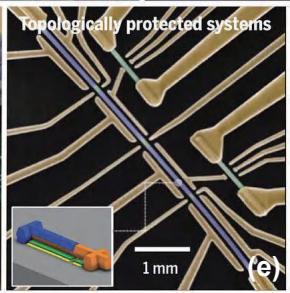

物理图像
从一维到二维的差别
一维量子点阵列（linear array）只是在单方向增加量子点：电荷探测器位于”对面”，栅极扇出、串扰补偿和读出复用都有现成方案。GaAs 体系已经做到一维 8 个量子点，Si/SiGe 体系先后做到了 6、9 乃至 12 个量子点，并在这些器件上演示了电子远距离传输、多比特通用控制和工业级良率制造 。二维阵列则同时沿两个方向增加量子点：电荷探测器失去了”对面”的位置，每个量子点可以拥有 2 个最近邻（水平、垂直）和 1–2 个次近邻（对角、反对角）耦合，栅极层数和布线复杂度随之翻倍，但回报是连接图更接近纠错码（surface code，表面码等）和凝聚态晶格——后者正是二维模拟型量子模拟器的目标对象。

五大量子计算物理体系：超导电路、栅控半导体量子点、金刚石色心、离子阱、半导体/超导体复合拓扑比特
为什么比一维难
量子点尺寸通常只有几十纳米，二维布局没有足够边缘给每个点单独引线。栅极必须跨层、扇出或共享，最近邻与对角次近邻耦合也更容易混杂。中心量子点离储库和电荷传感器更远，初始化与读出需要穿越其他点或借助射频/腔接口。具体而言：
- 布线与引出：一维阵列可以把柱塞栅和势垒栅都从一侧扇出；二维阵列在二维平面内排列栅极，柱塞/势垒/屏蔽栅往往需要多层金属（如 Si/SiGe 工艺常做 35 / 50 / 55 / 70 nm 四层铝栅）才能把所有电极拉出来。更激进的路线是行列共享控制门（门数按 增长），代价是独立寻址与串扰规避要靠电子穿梭完成——16×8 约束阵列上的穿梭程序自动生成给出了完整方案（见电荷穿梭）。
- 电容串扰放大：栅极越密集，电化学势方向的交叉电容矩阵越接近奇异；势垒栅对最近邻与次近邻耦合同时有非零响应，调控维度膨胀。
- 电荷传感器摆放：一维中 SET（single-electron transistor，单电子晶体管）可以贴在链端；二维中四个内点同时被遮挡，需要在阵列对角（左上、右下）布置多个 SET，并配合两台锁相放大器同步读出 。
- 次近邻耦合残留：方形排列天然引入对角量子点之间的残余隧穿，必须用额外栅极（中心势垒 CB）单独压制或打开，否则既会污染表面码所要求的”仅最近邻”耦合，又会引入无法用常相互作用模型描述的多体效应。
理论模型：二维扩展 Fermi–Hubbard 模型
从常相互作用模型到 Hubbard 模型
常相互作用模型对单点、双点已经足够，对多点尤其是二维阵列则迅速失效：每个量子点都和几乎所有栅极有电容耦合，参数空间维度爆炸；而更致命的是，常相互作用模型是经典电路模型，不能解释点间隧穿引起的能级杂化——在二维相图里表现为反交叉点的弯曲。把量子点阵列描述为”格点 + 隧穿 + 在位排斥”的人工晶格，自然就得到费米–哈伯德模型（Fermi–Hubbard model）。对单轨道、可能含次近邻耦合的二维阵列，扩展 Fermi–Hubbard 哈密顿量为
其中 与 分别遍历最近邻和次近邻格点对，、 是相应隧穿能， 是各点充电能（同格点双占据库仑能）， 是点间长程库仑相互作用， 是栅压可调的电化学势。动能项 使电子离域，排斥项 使电子局域——这一竞争是后文 Mott 绝缘体（莫特绝缘体）–金属转变的源头。
强耦合极限：从 Hubbard 到 Heisenberg
当 且每点近似单占据时，双占据态被投影掉，二阶微扰把 Hubbard 模型约化为海森堡自旋模型（Heisenberg model）。对两个量子点的失谐 ，塞曼能差 ，交换耦合为
当 时退化为熟悉的 。这一公式同时连接两件事：它既是交换相互作用量子门的微观来源，也是”量子模拟”和”量子计算”两种用途在参数空间的交汇点——同一个 、，既被用来做两比特门，也被用来扫过 比值研究莫特物理。
二维为何无可解性
一维 Hubbard 模型可用 Bethe 拟设（Bethe ansatz）严格求解，但维度提升至二维后由于电子间相互作用复杂性的急剧增加，已无解析解，只能依赖数值解法；进一步扩展到 N 个格点时希尔伯特空间维度指数膨胀，经典数值很快失效。这正是用二维量子点阵列做模拟型量子模拟（analog quantum simulation）的动机：与其在经典计算机上求解二维 Hubbard，不如直接制备一个服从同一哈密顿量的人工晶格并测量它的演化。半导体量子点与 Hubbard 模型的这种对应最早由 Stafford 与 Das Sarma 于 1994 年明确提出，目标是研究强关联体系中的莫特转变——这一想法此后被 Hensgens 等人于 2017 年在硅量子点线性阵列上首次实现， 论文则把它推进到硅基 2×2 阵列。
器件结构：以 Si/SiGe 2×2 阵列为例
下面以 论文设计的 Si/SiGe 2×2 阵列作为典型器件展开说明，其设计要点同时也是其他硅基二维阵列的通用参考。
多层栅极与电极配置
器件采用与一维四点阵列相同的 Si/SiGe 异质结衬底，包含四层铝栅（厚度分别为 35、50、55、70 nm），由下至上分别为屏蔽栅、能级栅、两层势垒栅。具体电极配置为：
- 能级栅 P1–P4（橙色）：在四个量子点正下方定义电势阱，决定各点电化学势 。尺寸 70 nm × 90 nm，间距 45 nm，既保证高密度排列又保留足够的调控能力。
- 最近邻势垒栅 B12、B23、B34、B41（绿色）：分别控制四个最近邻对之间的隧穿耦合 ，覆盖填充能级栅之间的间隙以充分调控隧穿。
- 中心势垒栅 CB（黄色）：位于阵列几何中心，专门用于打开或压制次近邻对角隧穿 ，是二维相对一维的关键新增电极。
- 屏蔽栅 SC1–SC4：定义量子点所在的方形区域和两个 SET 的导电沟道；屏蔽板形状经过特殊设计，使 SET 位于阵列的左上和右下对角。
- SET 探测器：左上角、右下角各一个大量子点，分别标记为 SET1、SET2；两台锁相放大器同步测量（频率 73 Hz / 137 Hz，幅值 0.2–0.5 mV），SET1 偏向探测 QD1/QD2/QD4，SET2 偏向探测 QD2/QD3/QD4，二者结合可覆盖阵列全部量子点。
器件最终在 20 mK 稀释制冷机中测量，温度远低于充电能 meV 与点间耦合 eV，保证了清晰的库仑阻塞条件。
关键设计参数
- 栅极层厚：35 / 50 / 55 / 70 nm（四层铝，自下而上）。
- 柱塞栅尺寸：70 nm × 90 nm，间距 45 nm。
- QD1–QD3 距离（COMSOL 静电势模拟）：约 139 nm；QD2–QD4 距离约 114 nm——屏蔽板使 QD2/QD4 受到更强的静电束缚，QD2/QD4 间的隧穿比 QD1/QD3 间更容易打开。
- 四点杠杆臂平均： eV/V（单点模式逐点测量）。
- 充电能：单点模式 2.7–3.7 meV（平均 ≈ 3.2–3.4 meV）；阵列模式四点同时形成后重测得到 meV，差异源于屏蔽栅的非对称静电束缚。
可调性：电化学势、隧穿耦合与耦合构型
电化学势的独立调控：虚拟电极
阵列中每根栅极通过寄生电容同时影响多个量子点——这就是电化学势方向的交叉电容串扰。解决方案是虚拟电极：在 (1,1,1,1) 电荷区附近，逐栅扫描测得电荷稳定图的隧穿线斜率，由斜率提取归一化串扰矩阵
在 Si/SiGe 2×2 阵列中得到 11×11 矩阵（7 势垒 + 4 柱塞），其逆矩阵 把物理栅压组合成虚拟电极，使 只移动 而不显著扰动其他参数。隧穿线由倾斜变正交是虚拟电极生效的直接判据。
充电能不均匀的处理：扫描系数归一化
即使每个量子点的 已经能独立控制，四个点的充电能 通常并不相等——实测四点 为 2.83、5.02、3.05、4.63 meV。要实现均匀填充，需要把每个虚拟柱塞栅的扫描系数按充电能归一化：
以 meV 为基准，可得 、、、。再把扫描轴换成失谐轴与能量轴
相当于把相图绕原点旋转 45° 并按充电能缩放。给两个对角对（QD1–QD3、QD2–QD4）的失谐轴再分别乘以不同系数 、，即可在一张”电子填充谱”中同时区分四个量子点的填充过程。
最近邻隧穿耦合的独立调控
隧穿耦合不是线性可分的，而是与势垒电压呈强指数依赖：
在 2×2 阵列中测得四个最近邻势垒的调控系数 从 到 mV 不等，最弱者仅为最强者的 21%。最近邻隧穿耦合可在约 25 eV 到超过 200 eV 的大范围内调节，下限主要由有限电子温度（150 mK ≈ 13 eV）和 SET 反作用、交流激励功率展宽等因素决定。势垒栅之间的串扰并非严格为零：测得 增大时会把 QD4 推离 QD3 而显著压低 ，交叉调控系数 mV，据此手动补偿对应势垒栅即可实现 的独立控制——这正是隧穿耦合方向的”虚拟势垒栅极”。
次近邻耦合的选择性调控：CB 电极
二维相对一维的本质区别是有对角隧穿 。利用中心势垒 CB 实现了次近邻耦合的选择性打开：当 时 ；逐渐增大 时，（QD2 与 QD4 之间，反对角）先被打开，再到一定阈值后 （QD1 与 QD3 之间，对角）才被打通。这种非对称来自屏蔽板的非对称屏蔽——QD2/QD4 比 QD1/QD3 靠得更近。CB 在打开次近邻耦合的同时会改变最近邻耦合与电化学势，电化学势方向的串扰可由虚拟电极补偿，势垒方向则因 CB 电压行程较大无法建立有效虚拟势垒栅极，需按”先确保最近邻处于弱耦合，再手动调节势垒栅补偿”的流程手动完成。
不同耦合构型：方形、菱形、锯齿形
凭借电化学势与最近邻、次近邻耦合的独立调控能力，同一器件可被配置为多种耦合拓扑，无需重新流片：
- 方形（square）：CB=0，仅打开四个最近邻耦合，对应表面码所要求的”仅最近邻”耦合图。4 个最近邻双点的反交叉耦合约 60 eV，两个次近邻双点反交叉耦合接近于零。
- 菱形（diamond）：在方形基础上把 CB 升至 250 mV，打开 同时保持 。此时 eV，最近邻耦合基本不变。可用于研究几何阻挫、阻挫诱导磁性等。
- 锯齿形（zigzag / “N” / “Z”）：在方形基础上选择性关闭某几条最近邻隧穿（如 或 ），得到”N”形或”Z”形耦合链，可模拟 SSH 模型（Su–Schrieffer–Heeger）和锯齿形梯子模型中的非平凡相态。
这种”可重构”性正是二维阵列相对一维链的独特价值——同样的硬件，不同的耦合构型对应不同的凝聚态模型。
集体库仑阻塞：有限尺寸的莫特转变
把最近邻隧穿耦合从接近零同步调大，2×2 阵列的电子填充谱经历三个阶段，本质上是 Mott–Hubbard 金属–绝缘体转变在有限尺寸下的类比：
- 弱耦合（）：四个量子点近似孤立，电子被局域在各自格点上，填充谱呈现四种斜率截然不同的电荷隧穿线，对应四个单点库仑阻塞的叠加。系统性质类比于绝缘体（准确说是莫特绝缘体）。
- 中等耦合：单点特征消失，电荷隧穿线交叉处弯曲杂化，能级简并被解除并展宽成”微带”——有限尺寸下的能带类比。填充谱中可辨认上 Hubbard 微带（UHB）和下 Hubbard 微带（LHB），二者之间的有限能级间隔即为类莫特能隙（Mott gap）。系统进入集体库仑阻塞（collective Coulomb blockade, CCB）区，即莫特绝缘态的有限尺寸对应。
- 强耦合：微带与能隙闭合，填充谱退化为等间距隧穿线，整个 2×2 阵列表现为一个”大量子点”的库仑阻塞。实测大点充电能 1.05 meV，与按阵列核心尺寸（190 nm × 220 nm、有效直径约 230 nm）和自电容模型估算的 1.68 meV 同量级；改变部分点的电化学势时填充线不移动，说明电子已完全离域——系统类比于金属。
这一 CCB 出现–消失的过程就是莫特绝缘体–金属转变在 2×2 阵列上的有限尺寸类比；电荷感应填充谱与直流输运库仑菱形两种测量手段结果一致，且与二维扩展 Fermi–Hubbard 模型的数值模拟相符。
物理上，半满单带 Hubbard 模型的带宽 （ 为维度），临界相互作用 ；超过 后上、下 Hubbard 带劈裂开，其间即为莫特间隙。量子点体系中 通常由点尺寸固定，因此实验上扫过相变点的手段就是调节 （带宽调控）。 2×2 阵列的模拟参数取 meV、 meV、，与实测一致。
与一维阵列相比的特殊难点
| 难点 | 一维阵列 | 二维阵列 |
|---|---|---|
| 电荷探测器位置 | 链端，靠近所有点 | 对角放置，需多个 SET 覆盖 |
| 栅极层数 | 通常 1–2 层 | 4 层（屏蔽 / 能级 / 势垒×2）才能扇出 |
| 耦合种类 | 仅最近邻 | 最近邻 + 次近邻（对角） |
| 串扰矩阵维度 | 随点数线性 | 同时受中心势垒 CB 影响 |
| 充电能不均匀 | 较小 | 因屏蔽板非对称更明显（U₁–U₄ 可差 2 倍） |
| 制造良率 | 已经工业化（12 点一维） | 实验室阶段（最多 10 点二维） |
把虚拟电极、自动调控和电荷态识别作为基础设施而不是阵列完成后的附加功能，是二维阵列走向更大规模的前提。
参数与量级
| 量 | 典型值 | 说明 | 来源 |
|---|---|---|---|
| 栅极层厚 | 35 / 50 / 55 / 70 nm | 四层铝栅（屏蔽 / 能级 / 两层势垒） | |
| 能级栅尺寸 | 70 nm × 90 nm | 间距 45 nm | |
| QD1–QD3 / QD2–QD4 距离 | 139 nm / 114 nm | COMSOL 静电模拟 | |
| 平均杠杆臂 | ≈ 0.12 eV/V | 2×2 四点平均 | |
| 单点充电能 | 2.7–3.7 meV | 单点模式逐点测量 | |
| 阵列模式充电能 | 2.83 / 5.02 / 3.05 / 4.63 meV | 四点同时形成后重测 | |
| 扫描系数 | 0.67 / 0.71 / 0.97 / 1.00 | ， | |
| 最近邻隧穿 | 25–200 eV 可调 | 参考点 eV | |
| 次近邻隧穿 | 0 → > 100 eV | 通过 CB 选择性打开 | |
| 点间库仑 | 最近邻 ≈ 0.2–0.4 meV，次近邻 ≈ 0.05 meV | Hubbard 模拟所用参数 | |
| 势垒调控系数 | (1.42–6.85)×10⁻² mV⁻¹ | 四个最近邻势垒 | |
| 耦合串扰补偿系数 | −1.03 ± 0.11 ×10⁻² mV⁻¹ | vB₄₁→t₃₄ | |
| 电子温度 | 150 mK ≈ 13 eV | 反交叉拟合下限 | |
| 库仑阻塞–CCB–大点 三段 | 见正文 § 集体库仑阻塞 | 弱→中→强耦合三阶段 | |
| 大量子点充电能 | 1.05 meV 实测 / 1.68 meV 估算 | 强耦合极限下整个阵列 |
与其他概念的关系
- 量子点阵列给出了二维阵列的总体定位：二维是其中的一个分支，与一维链共享扩展问题但有更强的连接图与可重构性。
- 二维阵列的耦合图与表面码（surface code）所要求的方格子匹配；“仅最近邻”耦合（方形构型）正是表面码对底层硬件的基本要求。
- 阵列的微观描述基于扩展 Fermi–Hubbard 模型——与一维共享同一哈密顿量，但二维无可解性，只能借模拟型量子模拟器或数值方法研究。
- 阵列的可调性离不开虚拟电极、交叉电容矩阵与自动调控；电荷态识别是从测量图样到控制动作的接口层。
- 单点的库仑阻塞与充电能 是所有标定的出发点；多点模式下 的不均匀性正是需要”归一化”扫描系数的原因。
- 点间隧穿耦合 既进入扩展 Fermi–Hubbard 模型的动能项，又在强耦合极限下决定交换相互作用 ——同一个参数同时服务量子模拟和量子计算两种用途。
- 二维阵列态的感知依赖QPC 电荷传感或 SET 探测器以及射频反射测量的复用；与高阻抗谐振腔杂化后则进入电路量子电动力学范畴。
- 器件材料背景见Si/SiGe 异质结。
- 二维化的下一跳是全向穿梭：像素化 clavette 栅在阵列上实现任意方向传送带输运、按谷劈裂地图绕行，为二维阵列提供架构级量子路由（见电荷穿梭”全向穿梭”一节）。
参考文献
- 二维阵列的通用控制与扩展演示：Hendrickx et al., Nature 591, 580 (2021)、John et al., Nat. Commun. 16 (2025)、Philips et al., Nature 609, 919 (2022)。
完整文献库（含各篇站内全文页）见 参考文献库。